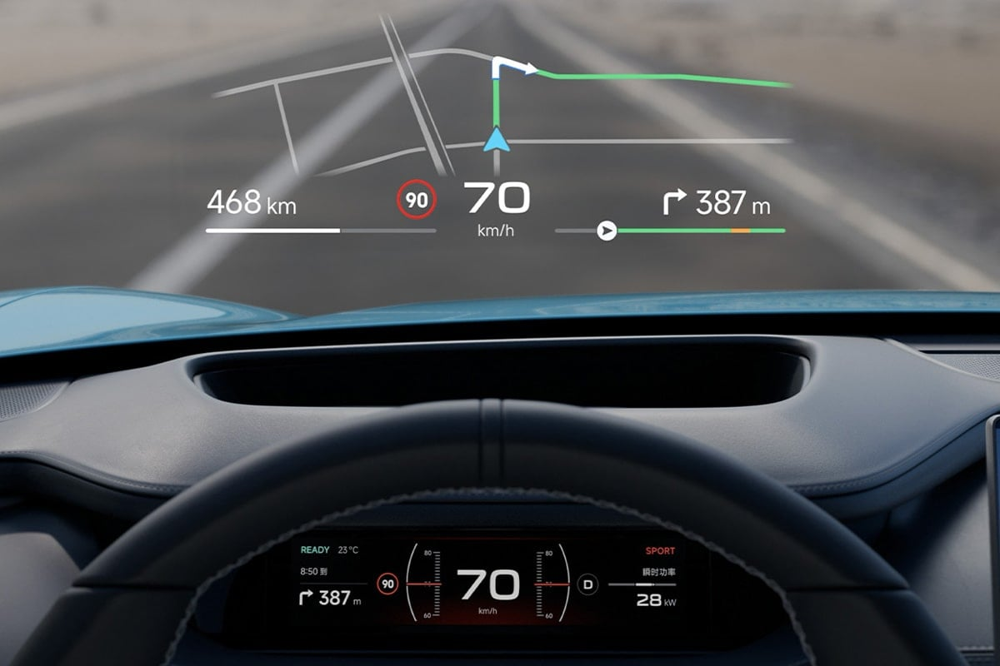
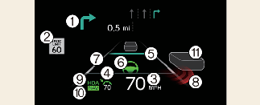
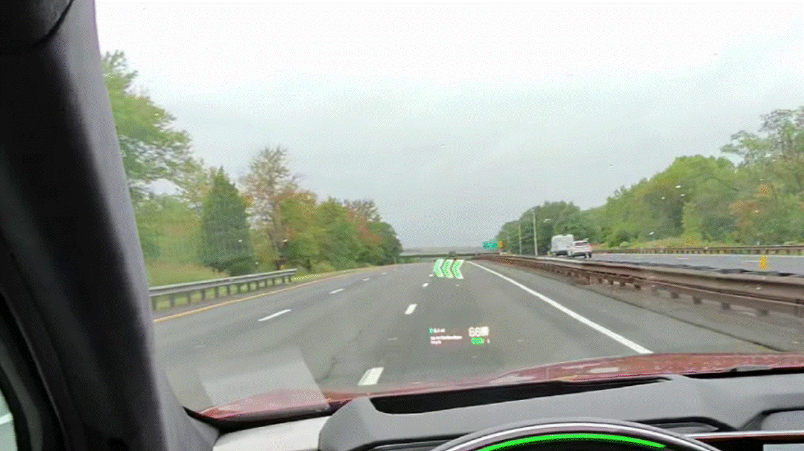

小鹏 G7

- 车速锚点
- 下方信息带中央，左右分布状态与时间
- 导航
- 右转箭头在道路画面上方，车道动作提示位于下方
- 辅助驾驶与告警
- 演示图有 NGP 和限速，发布文列出变道意图与场景告警
固定读数和场景提示可并存。比较重点是密集路口里贴路提示与信息带是否争抢注意力，发布会大屏无法验证实车效果。
对照 14 款量产车型的手册图、官方技术图和媒体实车画面，观察关键信息放在哪里，以及驾驶任务变化时如何调配显示空间。
选择有清楚图源的代表性量产车型，中国品牌 6 款，海外品牌 8 款。选样覆盖不同市场、配置与代际，适用于布局对照。销量和市场渗透率需要另行核验。
图像保留原内容。小鹏图为发布会画面局部，丰田为手册页局部，大众图从官方 PDF 提取，凯迪拉克为媒体试驾视频帧。
默认并看同为道路关联 AR 的小鹏 G7 与大众 ID.7。也可换成小米 YU7 与宝马 iX3 对照风挡下缘布局。
固定读数和场景提示可并存。比较重点是密集路口里贴路提示与信息带是否争抢注意力，发布会大屏无法验证实车效果。
| 车型与版本 | 归类 | 车速锚点 | 导航 | 辅助驾驶与告警 | 图源类型 |
|---|---|---|---|---|---|
| 问界 M92026 款增程版 · 中国手册 | 中国品牌状态区＋道路关联 AR | 画面中部，车速数字居主位 | 左侧地图和转向距离，上方另有绿色箭头示例 | 右侧编排限速和道路提示，图中保留原手册引线 | 官方手册图 |
| 理想 i82026 Max · 中国手册 | 中国品牌固定信息区 HUD | 右侧，车速与挡位集中 | 左侧，方向、距离、路线与预计到达时间 | 中央显示车道、车辆、辅助驾驶和告警 | 官方手册图 |
| 小米 SU7初代发布图 · 2024 | 中国品牌固定信息区 HUD | 画面中央，限速邻近车速 | 路线示意位于上部，转向和距离在右侧 | 左侧有续航，当前图未展示警告态 | 厂商图 · 媒体转载 |
| 小鹏 G72025 首发演示 · 中国 | 中国品牌状态区＋道路关联 AR | 下方信息带中央，左右分布状态与时间 | 右转箭头在道路画面上方，车道动作提示位于下方 | 演示图有 NGP 和限速，发布文列出变道意图与场景告警 | 官方发布会摄影 · 局部 |
| 极氪 007全球车型页 · 展示配置 | 中国品牌状态区＋道路关联 AR | 示图为 P 挡，行驶车速位置待确认 | 画面右侧可见转向与 57 米提示 | 中央可见车辆图形，左侧 P 挡 | 官方车型图 |
| 小米 YU72025 产品页 · 小米天际屏 | 中国品牌风挡下缘信息带 | 主驾侧行车信息区，示图为 P 挡 | 下缘横向区可编排信息卡，配置依模式 | 主驾与乘客可见的横向空间承担不同任务 | 官方车型图 |
| 丰田 Camry2024 · 北美 HUD 配置 | 海外品牌固定信息区 HUD | 右侧，挡位和限速挨近车速 | 左侧共享导航与辅助驾驶区域 | 左侧图示有辅助信息，下方保留额外信息区域 | 官方快速指南 · 局部 |
| 本田 Accord Hybrid2026 · 北美 HUD 配置 | 海外品牌固定信息区 HUD | 右下为当前车速，左下 50 mph 属辅助驾驶读数 | 手册列出逐向指引，示图为车道告警态 | 车道与跟车在左侧，交通标志在右上 | 官方手册图 |
| 起亚 EV92026 · 美国 MV1A 手册 | 海外品牌固定信息区 HUD | 下部中央，巡航设定速度在左侧 | 上部左侧为逐向箭头和距离 | 车道跟随、跟车、盲区和周边车辆占中部与右侧 | 官方手册图 |
| 奔驰 S 级 W2232020 代际发布 · 可选 AR-HUD | 海外品牌状态区＋道路关联 AR | 图中车速位于下方状态群中偏右 | 上方多枚鱼骨箭头叠加在路口方向 | 下方聚合状态，品牌说明包含跟距辅助 | 经销商转载配图 |
| 奥迪 Q6 e-tron2024 Audi 技术图 · 第二代 AR-HUD | 海外品牌状态区＋道路关联 AR | 状态区内，位于上方道路关联图形之下 | 原图标注道路关联的增强区域 | 速度、交通标志、辅助驾驶与导航共享显示系统 | 官方技术示意 |
| 大众 ID.7欧洲发布资料 · ID.7 | 海外品牌状态区＋道路关联 AR | 官方说明车速和限速属于 HUD 近区状态 | 远区负责转向与车道级提示，原图有绿色箭头 | 设备可呈现车道和跟距警告，小仪表还保留基础信息 | 官方技术资料 · 内嵌图 |
| 宝马 iX3新世代 iX3 · 2025 技术发布 | 海外品牌下缘信息带＋独立 HUD | 主驾前方的 Panoramic Vision 条带左侧 | 可选 3D HUD 在条带上方显示导航和辅助驾驶 | 条带中部及右侧可配置，和上方 HUD 协同 | 官方系统示意 · 媒体转载 |
| 凯迪拉克 VISTIQ2026 Platinum · 北美媒体试驾 | 海外品牌状态区＋道路关联 AR | 画面下方可见固定读数，细字难以辨识 | 绿色转向箭头位于状态信息上方，与道路画面关联 | 该帧未充分显示警告态，仪表与 HUD 同框 | 媒体实车画面 · 视频帧 |
14 款车型

在保留中央车速的同时，用两侧容纳常用信息。手册说明可开启 AR 增强，图示仅对应所选版本。

手册明确给出左导航、中辅助、右车速。中央车道场景属于 HUD 内的环境可视化，公开手册未给出它与真实车道的位置注册证据。

信息围绕中心速度锚点排布，下方仪表重复关键速度。本文按可观察布局归类，未用此图判定道路注册能力。
固定读数和场景提示可并存。比较重点是密集路口里贴路提示与信息带是否争抢注意力，发布会大屏无法验证实车效果。

产品页将其称为 AR-HUD。静态原图适合看横向分工，告警位置、实际贴路精度和国内 OTA 版本仍待核对。

利用前风挡下黑区显示，横向空间增加后，主驾关键信息仍需要独立分组。品牌给出的 1.1m 是条带宽度口径。

同一个固定区域可以按情境切换任务。作为传统 HUD 历史基线保留，图中布局对应 2024 北美版。

两个速度值同时出现时，位置、尺寸、图标必须能区分当前车速与设定速度。

手册用 11 个编号解释信息项。此图能对照模块位置，具体项目受配置、地区和辅助驾驶状态影响。

用短时出现的鱼骨箭头回答「往哪走」。配图为经销商来源，实拍状态及具体配置未核实。

原图有状态区与增强区的引线。厂商表述的最远增强范围描述场景关联，光学虚像距离需另查技术规格。

状态近区和道路远区分工清晰，需关注 HUD 与小仪表出现同一信息时的一致性。

这张图是系统示意，车型应用以 iX3 资料为准。对比 YU7 时应逐层看信息归属和可见对象。

实车帧可观察空间层级和道路背景，曝光、眼点与动态精度仍需受控实测。
问界 M9、小米 SU7 与起亚 EV9 的样本把速度放在中部。理想 i8、丰田 Camry 和本田 Accord Hybrid 的样本允许车速靠右。车速是否容易找到，取决于位置是否稳定、数字是否突出，以及导航展开后是否挤占原位。
问界 M9 · 理想 i8 · 丰田 Camry · 本田 Accord Hybrid · 起亚 EV9
小鹏公开演示覆盖车道引导、辅助驾驶意图和多场景提示。奔驰展示转弯鱼骨，大众提供车道级导航并保留近区状态，奥迪用原图清楚标示状态区与增强区。共同模式是速度等长期信息集中在固定区域，空间信息按场景呈现。功能丰富度与画面负担需要在同一路口任务下验证。
小鹏 G7 · 奔驰 S 级 W223 · 大众 ID.7 · 奥迪 Q6 e-tron
小米 YU7 通过风挡下缘卡片组织驾驶信息与其他内容。宝马 iX3 将主驾关键读数放在 Panoramic Vision 主驾侧，并把道路导航和部分辅助图形交给可选的上方 3D HUD。评估差距时要看信息是否重复、乘员能看见哪些内容，以及驾驶任务发生变化时信息如何交接。
理想的手册强调左侧导航与中央环境信息并列，丰田让导航与辅助在固定区域承担不同任务，起亚的手册图同时列出周边车辆、车道和跟车信息。可比较的是模块并列与分时显示的策略。配置信息、道路注册稳定性、眩光与识读效率需要统一测试数据才能比较性能差距。
理想 i8 · 丰田 Camry · 起亚 EV9 · 凯迪拉克 VISTIQ